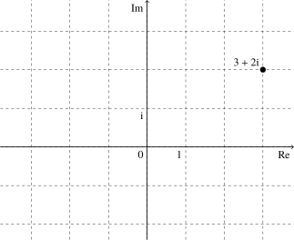
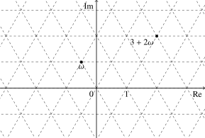

OI Wiki · prijevod · MatematikaOI Wiki · translation · Mathematics
Kvadratna poljaQuadratic Fields
Ovaj članak kratko predstavlja pojmove povezane s kvadratnim poljima. Dva važna primjera s njima u vezi su Gaussovi cijeli brojevi i Eisensteinovi cijeli brojevi, koji se mogu upotrijebiti za rješavanje nekih problema iz teorije brojeva.
Osnovni pojmovi
U ovom odjeljku najprije uvodimo niz osnovnih pojmova. Kvadratna polja i prsteni kvadratnih cijelih brojeva posebni su slučajevi općenitijih pojmova algebarskog proširenja polja i prstena algebarskih cijelih brojeva, pa se gotovo sve definicije i rezultati ovog odjeljka mogu na odgovarajući način poopćiti na opći slučaj. Rasprava u ovom odjeljku bit će ograničena na poseban slučaj kvadratnih polja, bez uvođenja previše sadržaja iz algebarske teorije brojeva.
Kvadratno polje
Elementi kvadratnog polja su kvadratni algebarski brojevi.
Kvadratni algebarski broj (quadratic algebraic number) kompleksan je broj koji se može prikazati kao rješenje kvadratne jednadžbe s cjelobrojnim koeficijentima. Iz formule za rješenja kvadratne jednadžbe slijedi da se svaki kvadratni algebarski broj može prikazati u obliku
gdje su \(a\) i \(b\) racionalni brojevi, a \(d\) je cijeli broj bez kvadratnih faktora. Svaki broj tog oblika također je kvadratni algebarski broj. Kvadratni algebarski brojevi dijele se na racionalne brojeve i kvadratne iracionalne brojeve (quadratic irrational number). Očito je prikaz kvadratnog iracionalnog broja u gornjem obliku jedinstven.
Za svaki cijeli broj \(d\neq 0,1\) bez kvadratnih faktora može se provjeriti da je skup \(\mathbf Q(\sqrt{d})=\{a+b\sqrt{d}:a,b\in\mathbf Q\}\) zatvoren na zbrajanje, oduzimanje, množenje i dijeljenje. Budući da se skup zatvoren na četiri osnovne računske operacije naziva poljem, skup \(\mathbf Q(\sqrt{d})\) naziva se kvadratnim poljem (quadratic field). Svako kvadratno polje sadrži sve racionalne brojeve, pa su sva ona kvadratna proširenja polja racionalnih brojeva \(\mathbf Q\). Kad je \(d>0\), svi brojevi u kvadratnom polju \(\mathbf Q(\sqrt{d})\) su realni; tada se \(\mathbf Q(\sqrt{d})\) naziva realnim kvadratnim poljem. Kad je \(d<0\), u kvadratnom polju nijedan broj osim racionalnih nije realan; tada se \(\mathbf Q(\sqrt{d})\) naziva imaginarnim kvadratnim poljem.
Konjugat i norma
Konjugat (conjugate) kvadratnog iracionalnog broja \(a+b\sqrt{d}\) definira se kao \(a-b\sqrt{d}\). Konjugirani kvadratni iracionalni brojevi dva su različita korijena iste kvadratne jednadžbe s cjelobrojnim koeficijentima. U realnom kvadratnom polju konjugat kvadratnog iracionalnog broja ne podudara se s njegovim konjugatom kao kompleksnog broja; u imaginarnom kvadratnom polju konjugat kvadratnog iracionalnog broja upravo je njegov konjugat kao kompleksnog broja. Naposljetku, konjugat racionalnog broja definira se kao on sam. Time je pojam konjugata definiran za sve kvadratne algebarske brojeve.
U svakom kvadratnom polju jednakosti dobivene zbrajanjem, oduzimanjem, množenjem i dijeljenjem ne mogu razlikovati konjugirane elemente. Drugim riječima, zamijenimo li u jednakosti svaki broj njegovim konjugatom, tj. promijenimo li predznak svakog kvadratnog korijena, jednakost i dalje vrijedi.
Pomoću konjugata može se konstruirati nekoliko preslikavanja s kvadratnih algebarskih brojeva u racionalne brojeve, kojima se rasprava o kvadratnim algebarskim brojevima prevodi u raspravu o racionalnim brojevima. Jednostavniji je trag (trace) kvadratnog algebarskog broja \(\alpha\), tj. zbroj broja i njegova konjugata, u oznaci \(\operatorname{tr}(\alpha)\). Budući da je to zapravo samo \(2\) puta njegov racionalni dio, ne pruža mnogo informacija.
Korisnija je norma kvadratnog algebarskog broja. Umnožak kvadratnog algebarskog broja i njegova konjugata naziva se njegovom normom (norm):
Očito se u imaginarnom kvadratnom polju pojam norme podudara s pojmom kvadrata modula kompleksnog broja; u realnom kvadratnom polju, međutim, ta se dva pojma ne podudaraju.
Norma ima dobra svojstva. Prvo, budući da \(d\) nema kvadratnih faktora, pa ne može biti potpun kvadrat, samo \(0\) ima normu \(0\). Drugo, norma čuva množenje i dijeljenje:
Osim toga, recipročna vrijednost kvadratnog algebarskog broja upravo je omjer njegova konjugata i njegove norme:
Prema Vièteovim formulama, kvadratni algebarski broj \(\alpha\) zapravo je korijen jednadžbe
Diskriminanta te jednadžbe naziva se i diskriminantom (discriminant) tog kvadratnog algebarskog broja, u oznaci \(\operatorname{disc}(\alpha)\), a iznosi \(4db^2\).
Matrični prikaz
Slično kompleksnim brojevima, i kvadratni algebarski brojevi mogu se prikazati matricama. Neka je \(d\neq 0,1\) cijeli broj bez kvadratnih faktora, a \(a,b\) racionalni brojevi; tada se \(a+b\sqrt{d}\) može prikazati matricom
Može se provjeriti da rezultati zbrajanja, oduzimanja, množenja i dijeljenja tih matrica odgovaraju rezultatima računanja s kvadratnim algebarskim brojevima. Trag i determinanta te matrice odgovaraju redom tragu i normi kvadratnog algebarskog broja, a diskriminanta karakterističnog polinoma te matrice upravo je diskriminanta kvadratnog algebarskog broja. Adjungirana matrica odgovara konjugatu kvadratnog algebarskog broja.
Prsten kvadratnih cijelih brojeva
Među kvadratnim algebarskim brojevima posebni su kvadratni cijeli brojevi. Kvadratni cijeli broj (quadratic integer) kompleksan je broj koji se može prikazati kao rješenje kvadratne jednadžbe s cjelobrojnim koeficijentima i vodećim koeficijentom jedan. Jedina razlika u odnosu na kvadratne algebarske brojeve jest ograničenje na vodeći koeficijent. Prema formuli za rješenja, dva korijena kvadratne jednadžbe \(x^2+px+q=0\) su
Ako je \(p\) paran, tj. \(p=2k\), dva se korijena mogu zapisati kao \(-k\pm\sqrt{k^2-q}\); ako je \(p\) neparan, tj. \(p=2k+1\), dva se korijena mogu zapisati kao \(-k-\dfrac{1\pm\sqrt{4(k^2+k-q)+1}}{2}\). Iz tih dvaju slučajeva može se zaključiti da se kvadratni cijeli brojevi u \(\mathbf Q(\sqrt{d})\) nužno mogu zapisati u obliku
gdje su \(a\) i \(b\) cijeli brojevi, a
Obrnuto, svaki kompleksan broj tog oblika je kvadratni cijeli broj. Prikaz svakog neracionalnog kvadratnog cijelog broja u tom obliku je jedinstven.
Skup svih kvadratnih cijelih brojeva u kvadratnom polju \(\mathbf Q(\sqrt{d})\) označava se \(\mathbf Z[\omega]\). Budući da je taj skup zatvoren na zbrajanje, oduzimanje i množenje, naziva se i prstenom kvadratnih cijelih brojeva (quadratic integer ring). Racionalni brojevi u prstenu kvadratnih cijelih brojeva upravo su svi cijeli brojevi. Promotrimo li skup svih omjera kvadratnih cijelih brojeva iz \(\mathbf Z[\omega]\), dobivamo odgovarajuće kvadratno polje \(\mathbf Q(\sqrt{d})\).
Trag, norma i diskriminanta kvadratnog cijelog broja su cijeli brojevi. Diskriminanta s najmanjom apsolutnom vrijednošću među diskriminantama svih kvadratnih iracionalnih brojeva u prstenu kvadratnih cijelih brojeva \(\mathbf Z[\omega]\) naziva se i diskriminantom odgovarajućeg kvadratnog polja \(\mathbf Q(\sqrt{d})\). Kad je \(d\equiv 1\pmod 4\), diskriminanta je \(d\); kad je \(d\equiv 2,3\pmod 4\), diskriminanta je \(4d\).
Djeljivost, asociranost i jedinice
Slično kao za cijele brojeve, i za kvadratne cijele brojeve može se izgraditi teorija djeljivosti. Naravno, rasprava se mora voditi unutar istog prstena kvadratnih cijelih brojeva.
Za kvadratne cijele brojeve \(\alpha\) i \(\beta\) iz prstena kvadratnih cijelih brojeva \(\mathbf Z[\omega]\), ako postoji kvadratni cijeli broj \(\gamma\) iz istog prstena takav da vrijedi \(\beta=\alpha\gamma\), kažemo da \(\alpha\) dijeli \(\beta\) i pišemo \(\alpha\mid\beta\). Relacija djeljivosti je relacija preduređaja na prstenu kvadratnih cijelih brojeva. Ako istodobno vrijedi \(\alpha\mid\beta\) i \(\beta\mid\alpha\), tada se \(\alpha\) i \(\beta\) u proučavanju teorije djeljivosti mogu smatrati istim brojem; oni se nazivaju asociranima (associate). Relacija asociranosti je relacija ekvivalencije na prstenu kvadratnih cijelih brojeva.
U analogiji s teorijom djeljivosti cijelih brojeva, asociranost odgovara tome da su brojevi suprotni. U teoriji djeljivosti obično je dovoljno promatrati samo prirodne brojeve, bez razmatranja negativnih brojeva. Za kvadratne cijele brojeve relacija asociranosti može biti nešto složenija. Ako su kvadratni cijeli brojevi \(\alpha\) i \(\beta\) asocirani, tada postoje kvadratni cijeli brojevi \(\gamma\) i \(\delta\) takvi da vrijedi \(\beta=\alpha\gamma\) i \(\alpha=\beta\delta\). Stoga omjer \(\gamma\) brojeva \(\beta\) i \(\alpha\) nužno mora biti poseban kvadratni cijeli broj, tj. takav da postoji kvadratni cijeli broj \(\delta\) s \(\gamma\delta=1\). Takav kvadratni cijeli broj \(\gamma\) naziva se jedinicom (unit), a također i invertibilnim elementom. Dva su kvadratna cijela broja asocirana ako i samo ako je njihov omjer jedinica. Stoga, da bismo razumjeli relaciju asociranosti na prstenu kvadratnih cijelih brojeva, moramo razumjeti strukturu njegovih jedinica.
Budući da norma čuva množenje, a norma kvadratnog cijelog broja uvijek je cijeli broj, pomoću norme se relacija djeljivosti kvadratnih cijelih brojeva može prevesti u relaciju djeljivosti cijelih brojeva. Drugim riječima, ako je \(\alpha\mid\beta\), nužno vrijedi \(N(\alpha)\mid N(\beta)\). Jednako tako, kvadratni cijeli broj \(\alpha\) je jedinica ako i samo ako je njegova norma \(N(\alpha)=\pm 1\). Stoga, da bismo dobili sve jedinice prstena kvadratnih cijelih brojeva \(\mathbf Z[\omega]\), dovoljno je riješiti diofantsku jednadžbu:
gdje je izraz za normu
Za imaginarne prstene kvadratnih cijelih brojeva, tj. kad je \(d<0\), budući da je norma nužno nenegativan cijeli broj, lako se provjerava da za sve negativne \(d\neq -1,-3\) bez kvadratnih faktora rješenja su samo \((a,b)=(\pm 1,0)\); tj. osim u \(\mathbf Z[\sqrt{-1}]\) i \(\mathbf Z[\frac{1+\sqrt{-3}}{2}]\), jedinice imaginarnih prstena kvadratnih cijelih brojeva su samo \(\pm 1\). Označimo \(\mathrm{i}=\sqrt{-1}\); tada se prsten kvadratnih cijelih brojeva \(\mathbf Z[\mathrm{i}]\) naziva i prstenom Gaussovih cijelih brojeva, a skup njegovih jedinica je \(\{\pm 1,\pm\mathrm{i}\}\). Označimo \(\omega=\frac{1+\sqrt{-3}}{2}\); tada se prsten kvadratnih cijelih brojeva \(\mathbf Z[\omega]\) naziva i prstenom Eisensteinovih cijelih brojeva, a skup njegovih jedinica je \(\{\pm 1,\pm\omega,\pm\omega^2\}\).
Za realne prstene kvadratnih cijelih brojeva, tj. kad je \(d>0\), situacija je složenija i može se svesti na raspravu o odgovarajućoj Pellovoj jednadžbi. Iz rezultata o Pellovoj jednadžbi slijedi da se tada skup svih jedinica može zapisati kao \(\{\pm u^k:k\in\mathbf Z\}\), gdje se \(u\) naziva fundamentalnom jedinicom (fundamental unit). Fundamentalna jedinica može se odrediti rješavanjem odgovarajuće Pellove jednadžbe. Fundamentalna jedinica nije jedinstvena: ako je \(u\) fundamentalna jedinica, tada su i njezin konjugat \(\bar u\) te \(-u\) i \(-\bar u\) fundamentalne jedinice.
Struktura jedinica prstena kvadratnih cijelih brojeva može se poopćiti na opće prstene algebarskih cijelih brojeva. Dirichletov teorem o jedinicama iz algebarske teorije brojeva kaže da sve jedinice bilo kojeg prstena algebarskih cijelih brojeva tvore konačno generiranu Abelovu grupu, a taj teorem ujedno daje i rang te grupe.
Sadržaji teorije djeljivosti cijelih brojeva poput najvećeg zajedničkog djelitelja, dijeljenja s ostatkom, Bézoutova teorema i teorema o jedinstvenoj faktorizaciji mogu se poopćiti na neke ili na sve prstene kvadratnih cijelih brojeva. Može li se takvo poopćenje provesti na nekom prstenu kvadratnih cijelih brojeva zapravo odražava jesu li svojstva tog prstena dovoljno bliska svojstvima prstena cijelih brojeva. Teorem o jedinstvenoj faktorizaciji ne vrijedi u svim prstenima kvadratnih cijelih brojeva; među prstenima kvadratnih cijelih brojeva u kojima vrijedi teorem o jedinstvenoj faktorizaciji, dijeljenje s ostatkom moguće je samo u nekima. Za raspravu o tim sadržajima vidi odjeljak Prsteni kvadratnih cijelih brojeva u dijelu o teoriji prstena ili odgovarajuće knjige.
Jedinstvena faktorizacija
Ako se teorem o jedinstvenoj faktorizaciji cijelih brojeva može poopćiti na prsten kvadratnih cijelih brojeva, trebao bi imati ovakav oblik: svaki kvadratni cijeli broj u prstenu \(\mathbf Z[\omega]\) može se zapisati kao umnožak nekoliko ireducibilnih elemenata, a ta je faktorizacija jedinstvena do na asociranost i poredak. Pri tome je ireducibilni element kvadratni cijeli broj koji se ne može dalje rastaviti na umnožak elemenata koji nisu jedinice, slično prostim brojevima u teoremu o jedinstvenoj faktorizaciji cijelih brojeva. Kao što je već spomenuto, teorem o jedinstvenoj faktorizaciji ne vrijedi u svim prstenima kvadratnih cijelih brojeva.
Na primjer, u \(\mathbf Z[\sqrt{-5}]\) postoji faktorizacija \(9=3\times 3=(2+\sqrt{-5})\times(2-\sqrt{-5})\), no \(3\) i \(2\pm\sqrt{-5}\) već su ireducibilni elementi, pa faktorizacija nije jedinstvena. Da bismo pokazali da su sva tri broja ireducibilni elementi, možemo promotriti njihove norme: sve su im norme jednake \(9\), pa kad bi se mogli rastaviti na umnožak elemenata koji nisu jedinice, norme dobivenih faktora mogle bi biti samo \(3\), ali u \(\mathbf Z[\sqrt{-5}]\) ne postoji kvadratni cijeli broj s normom \(3\).
Glavni razlog zašto u općem prstenu kvadratnih cijelih brojeva teorem o jedinstvenoj faktorizaciji ne vrijedi jest to što faktorizacija koja koristi samo kvadratne cijele brojeve nije dovoljno fina. Na primjer, ako treba rastaviti umnožak \(abcd\), a dostupni osnovni elementi su samo \(\{ab,cd,ac,bd\}\), dobivena faktorizacija prirodno nije jedinstvena; da bismo dobili teorem o jedinstvenoj faktorizaciji, moramo dodatno razmotriti \(\{a,b,c,d\}\). U prstenu kvadratnih cijelih brojeva struktura finija od kvadratnih cijelih brojeva su ideali prstena kvadratnih cijelih brojeva; preslikavanjem kvadratnog cijelog broja u njemu pripadni glavni ideal njegova se klasa asociranosti ulaže u skup ideala, pa je faktorizacija brojeva samo poseban slučaj faktorizacije ideala. Promatramo li faktorizaciju ideala u prstenu kvadratnih cijelih brojeva, može se dokazati da se ideali svakog prstena kvadratnih cijelih brojeva mogu jedinstveno rastaviti na umnožak nekoliko prostih ideala. To znači da su svi prsteni kvadratnih cijelih brojeva Dedekindove domene. Općenitije, svi prsteni algebarskih cijelih brojeva su Dedekindove domene.
Ako u nekom prstenu kvadratnih cijelih brojeva vrijedi teorem o jedinstvenoj faktorizaciji, tada njegovi prosti ideali i ireducibilni elementi (klase ekvivalencije do na asociranost) stoje u bijektivnoj korespondenciji, pa je za takve prstene kvadratnih cijelih brojeva faktorizacija ideala na proste ideale ekvivalentna faktorizaciji kvadratnih cijelih brojeva na ireducibilne elemente. Štoviše, ireducibilni elementi tada se nazivaju i prostim elementima i odgovaraju pojmu prostog broja među cijelim brojevima. Rasprava u nastavku koristit će proste ideale i srodne pojmove; čitatelji koji nisu upoznati s tim pojmom mogu ih doslovno zamijeniti prostim elementima, i tada su te tvrdnje točne u slučaju kad vrijedi teorem o jedinstvenoj faktorizaciji.
Da bismo potpuno razumjeli jedinstvenu faktorizaciju u općem prstenu kvadratnih cijelih brojeva \(\mathbf Z[\omega]\), moramo znati koji su prosti ideali u \(\mathbf Z[\omega]\). Prvo, svaki prosti ideal u \(\mathbf Z[\omega]\) dijeli (glavni ideal) svoje norme. Rastavimo li njegovu normu unutar cijelih brojeva na umnožak nekoliko prostih brojeva, prema teoremu o jedinstvenoj faktorizaciji taj prosti ideal nužno dijeli (glavni ideal) nekog od tih prostih faktora. Stoga prosti ideali u \(\mathbf Z[\omega]\) nužno nastaju daljnjim rastavljanjem prostih brojeva iz cijelih brojeva. Da bismo nabrojali sve proste ideale u \(\mathbf Z[\omega]\), dovoljno je dati jedinstvenu faktorizaciju (glavnog ideala) prostog broja \(p\) iz \(\mathbf Z\) u \(\mathbf Z[\omega]\). Budući da je norma (glavnog ideala) prostog broja \(p\) u \(\mathbf Z[\omega]\) jednaka \(p^2\), a njegova faktorizacija na proste ideale znači da norme tih prostih ideala moraju biti djelitelji \(p^2\), one mogu biti samo \(p\) ili \(p^2\). To pokazuje da postoje samo sljedeće tri mogućnosti:
- \(p\) je u \(\mathbf Z[\omega]\) inertan (inert), tj. \((p)\) je u \(\mathbf Z[\omega]\) i dalje prosti ideal;
- \(p\) se u \(\mathbf Z[\omega]\) cijepa (split), tj. \((p)\) se u \(\mathbf Z[\omega]\) može zapisati kao umnožak dvaju različitih konjugiranih prostih ideala;
- \(p\) se u \(\mathbf Z[\omega]\) grana (ramify), tj. \((p)\) se u \(\mathbf Z[\omega]\) može zapisati kao kvadrat nekog prostog ideala.
Dalje se može dokazati da je za određivanje u koji od tih triju slučajeva pada neki prosti broj \(p\) dovoljno izračunati Kroneckerov simbol \(\left(\dfrac{D}{p}\right)\) za diskriminantu \(D\) kvadratnog polja kojem pripada \(\mathbf Z[\omega]\) i taj prosti broj \(p\). Ta tri slučaja odgovaraju redom trima vrijednostima Kroneckerova simbola: \(-1\), \(+1\) i \(0\). Kad je \(p\) neparan prost broj, Kroneckerov simbol upravo je Legendreov simbol, pa ta tri slučaja odgovaraju redom tome da je \(D\) kvadratni neostatak modulo \(p\), da je \(D\) kvadratni ostatak modulo \(p\) te da \(p\) dijeli \(D\). Kad je \(p=2\), ta tri slučaja odgovaraju redom \(D\equiv \pm 3\pmod 8\), \(D\equiv \pm 1\pmod 8\) i tome da \(2\) dijeli \(D\).
Gaussovi cijeli brojevi
U ovom odjeljku neka \(\mathrm{i}=\sqrt{-1}\) označava imaginarnu jedinicu. Kvadratno polje \(\mathbf Q(\mathrm{i})\) naziva se i Gaussovim poljem; ono je ujedno četvrto ciklotomsko polje. Odgovarajući prsten kvadratnih cijelih brojeva \(\mathbf Z[\mathrm{i}]\) naziva se i prstenom Gaussovih cijelih brojeva, a njegovi elementi nazivaju se Gaussovim cijelim brojevima (Gaussian integer). Gaussovi cijeli brojevi imaju ukupno četiri jedinice, naime \(\pm 1\) i \(\pm\mathrm{i}\), pa svaki Gaussov cijeli broj različit od nule ima četiri asocirana elementa (uključujući sebe). U kompleksnoj ravnini Gaussovi cijeli brojevi predstavljaju sve cjelobrojne točke, a norma Gaussova cijelog broja \(N(a+b\mathrm{i})=a^2+b^2\) upravo je norma u kompleksnoj ravnini.

Na Gaussovim cijelim brojevima može se provoditi dijeljenje s ostatkom: za Gaussove cijele brojeve \(a\) i \(b\neq 0\) uvijek postoje Gaussovi cijeli brojevi \(q\) i \(r\) takvi da vrijedi \(a=bq+r\) i \(N(r)<N(b)\). Da bismo izračunali takvo dijeljenje s ostatkom, možemo najprije u \(\mathbf Q(\mathrm{i})\) izračunati \(\dfrac{a}{b}\), zatim u kompleksnoj ravnini pronaći najbližu cjelobrojnu točku i uzeti je za \(q\), pa izračunati \(r=a-bq\); tako dobiveni ostatak uvijek zadovoljava \(N(r)\le\dfrac{1}{2}N(b)\). Pomoću dijeljenja s ostatkom na Gaussove cijele brojeve mogu se prenijeti Euklidov algoritam, Bézoutov teorem i slično, a zatim i izgraditi teorem o jedinstvenoj faktorizaciji.
Gaussovi prosti brojevi
Pomoću rezultata prethodnog odjeljka mogu se odrediti prosti elementi među Gaussovim cijelim brojevima (nazivaju se i Gaussovim prostim brojevima). Budući da je diskriminanta prstena Gaussovih cijelih brojeva \(-4\), a Kroneckerov simbol \(\left(\dfrac{-4}{n}\right)\) za paran \(n\) ima vrijednost \(0\), a za neparan \(n\) vrijednost jednaku \(\left(\dfrac{-1}{n}\right)=(-1)^{(n-1)/2}\), vrijedi
Stoga Gaussovih prostih brojeva ima ukupno tri vrste:
- prosti brojevi oblika \(4k+3\) među cijelim brojevima;
- dva konjugirana Gaussova prosta faktora prostog broja oblika \(4k+1\) među cijelim brojevima;
- faktor \(1+\mathrm{i}\) prostog broja \(2\), čiji je konjugat s njim asociran.
Na primjer, u \(\mathbf Z[\mathrm{i}]\) postoji faktorizacija \(60=2^2\times 3\times 5=-(1+\mathrm{i})^4\times 3\times(2+\mathrm{i})\times(2-\mathrm{i})\).
Rasprava o tome može li se prosti broj \(p\) dalje rastaviti u \(\mathbf Z[\mathrm{i}]\) zapravo je ekvivalentna raspravi o tome može li se prosti broj \(p\) zapisati kao zbroj kvadrata cijelih brojeva \(a^2+b^2\). Stoga iz ovdje dobivenog rezultata slijedi da se prosti broj \(p\) može zapisati kao zbroj dvaju kvadrata ako i samo ako je \(p=2\) ili \(p\equiv 1\pmod 4\). To je Fermatov teorem o zbroju dvaju kvadrata.
Problem cjelobrojnih točaka na kružnici
U kompleksnoj ravnini Gaussovi cijeli brojevi predstavljaju sve cjelobrojne točke. Norma Gaussova cijelog broja upravo je kvadrat euklidske udaljenosti točke rešetke od ishodišta. Stoga kvadratni cijeli brojevi s istom normom odgovaraju cjelobrojnim točkama na kružnici sa središtem u ishodištu kompleksne ravnine. Drugim riječima, broj cjelobrojnih točaka na kružnici \(x^2+y^2=n\) jednak je broju Gaussovih cijelih brojeva \(x+y\mathrm{i}\) s normom \(n\).
Da bismo riješili jednadžbu \(N(x+y\mathrm{i})=n\), možemo promotriti faktorizaciju Gaussova cijelog broja \(x+y\mathrm{i}\) na proste faktore; umnožak normi tih prostih faktora jednak je \(n\). Stoga, dobijemo li najprije faktorizaciju broja \(n\), iz prostih faktora broja \(n\) možemo odrediti koje proste faktore \(x+y\mathrm{i}\) može imati. Neka je faktorizacija cijelog broja \(n\) na proste faktore
gdje su \(p_1,\cdots,p_\ell\) prosti faktori oblika \(4k+1\), a \(q_1,\cdots,q_m\) prosti faktori oblika \(4k+3\).
Prvo, jednadžba \(N(x+y\mathrm{i})=n\) ima rješenje ako i samo ako su eksponenti \(s_1,\cdots,s_m\) prostih faktora oblika \(4k+3\) broja \(n\) svi parni; to je zato što su \(q_1,\cdots,q_m\) također Gaussovi prosti brojevi čija je norma jednaka njihovu kvadratu, pa se u faktorizaciji norme na proste faktore nužno pojavljuju u parovima.
Pretpostavimo sada da jednadžba ima rješenje. Tada rješenje jednadžbe nužno ima oblik
gdje je \(u\) jedinica, \(a_j\pm b_j\mathrm{i}\) su konjugirani prosti faktori broja \(p_j\) u prstenu Gaussovih cijelih brojeva, a \(r_j^++r_j^-=r_j\). Stoga je broj rješenja jednadžbe jednak
Neka \(f(n)\) označava broj cjelobrojnih rješenja jednadžbe \(x^2+y^2=n\). Kad ona ima rješenje, \(f(n)\) je dan gornjim izrazom; inače je \(f(n)=0\). Lako se provjerava da je \(\dfrac14f(n)\) multiplikativna funkcija. Vrijednosti multiplikativne funkcije određene su njezinim vrijednostima na potencijama prostih brojeva. Iz izraza za \(f(n)\) može se odrediti da su vrijednosti \(\dfrac14f(n)\) na potencijama prostih brojeva \(p^k\) sljedeće:
- ako je \(p\) prost broj oblika \(4k+3\), tada je \(\dfrac14f(1)=1,\dfrac14f(p)=0,\dfrac14f(p^2)=1,\dfrac14f(p^3)=0,\cdots\);
- ako je \(p\) prost broj oblika \(4k+1\), tada je \(\dfrac14f(p^k)=k+1\);
- ako je \(p=2\), tada je \(\dfrac14f(2^k)=1\).
Lako se provjerava da se sva tri slučaja mogu zapisati kao
Budući da je Kroneckerov simbol \(\left(\dfrac{-4}{n}\right)\) potpuno multiplikativna funkcija, dobivamo
Oznaka u sumi krajnje desno koristi činjenicu da je Kroneckerov simbol \(\left(\dfrac{-4}{n}\right)\) realni Dirichletov karakter modulo \(4\).
Pitagorina jednadžba
Pomoću Gaussovih cijelih brojeva može se odrediti opće rješenje Pitagorine jednadžbe. Pitagorina jednadžba je sljedeća kvadratna diofantska jednadžba:
Usporedbom sa sadržajem prethodnog odjeljka vidimo da je to isto što i rješavanje jednadžbe \(N(x+y\mathrm{i})=z^2\). Neka \(z\) u \(\mathbf Z\) ima faktorizaciju na proste faktore
pa njezino rješenje \(x+y\mathrm{i}\) u \(\mathbf Z[\mathrm{i}]\) ima faktorizaciju na proste faktore
uz \(r_j^++r_j^-=2r_j\). Možemo izračunati najveći zajednički djelitelj brojeva \(x+y\mathrm{i}\) i \(z\) i dobiti sljedeći cijeli broj:
Uklonimo li taj zajednički faktor, \(\kappa^{-1}(x+y\mathrm{i})\) sadrži samo proste faktore oblika \(a_j\pm b_j\mathrm{i}\), konjugirani faktori ne pojavljuju se u parovima, a eksponenti \(|r_j^+-r_j^-|\) tih faktora nužno su parni (jer je njihov zbroj \(2r_j\) paran). Stoga je \(\kappa^{-1}(x+y\mathrm{i})\) kvadrat nekog kvadratnog cijelog broja \(u+v\mathrm{i}\). Odatle dobivamo sljedeće jednadžbe:
Unutar cijelih brojeva \(\mathbf Z\) to odgovara sljedećem sustavu jednadžbi:
Obrnuto, za bilo koje cijele brojeve \(u\) i \(v\) trojka \((x,y,z)\) dobivena gornjim izrazima zadovoljava Pitagorinu jednadžbu. Stoga je to opće rješenje Pitagorine jednadžbe.
Iz gornjeg postupka vidi se da su u primitivnoj Pitagorinoj trojci \((x,y,z)\) (tj. takvoj da je zajednički djelitelj brojeva \(x,y,z\) jednak jedan) brojevi \(x,y\) nužno jedan neparan i jedan paran, a \(z\) je neparan i sadrži samo proste faktore oblika \(4k+1\).
Sličnom metodom može se dobiti i opće rješenje jednadžbe \(x^2+y^2=z^3\) ili dokazati da jednadžba \(x^4+y^4=z^4\) nema rješenja. Naravno, pomoću općeg rješenja Pitagorine jednadžbe i metode beskonačnog spusta može se dokazati i jača tvrdnja, naime da jednadžba \(x^4+y^4=z^2\) nema rješenja.
Eisensteinovi cijeli brojevi
U ovom odjeljku neka je \(\omega=\dfrac{-1+\sqrt{3}\mathrm{i}}{2}=e^{2\pi\mathrm{i}/3}\).1 Kvadratno polje \(\mathbf Q(\sqrt{3}\mathrm{i})\) je treće i šesto ciklotomsko polje, a algebarski cijeli brojevi u njemu nazivaju se Eisensteinovim cijelim brojevima. Prsten \(\mathbf Z[\omega]\) svih Eisensteinovih cijelih brojeva naziva se prstenom Eisensteinovih cijelih brojeva. Prsten Eisensteinovih cijelih brojeva ima ukupno šest jedinica, a to su \(\pm 1\), \(\pm\omega\) i \(\pm\omega^2\). U kompleksnoj ravnini svi Eisensteinovi cijeli brojevi tvore trokutastu rešetku. Za razliku od Gaussovih cijelih brojeva, ovdje točke rešetke općenito nisu cjelobrojne točke.

Norma Eisensteinova cijelog broja je
a to je ujedno kvadrat udaljenosti navedene točke rešetke u kompleksnoj ravnini od ishodišta.
Eisensteinovi cijeli brojevi vrlo su slični Gaussovim cijelim brojevima. I na Eisensteinovim cijelim brojevima može se pomoću norme \(N(\cdot)\) definirati dijeljenje s ostatkom te izgraditi Euklidov algoritam, Bézoutov teorem, teorem o jedinstvenoj faktorizaciji i druge rezultate. Slično kao gore, mogu se izvesti faktori prostih brojeva u prstenu Eisensteinovih cijelih brojeva. U tu svrhu uočimo da je diskriminanta \(\mathbf Z[\omega]\) jednaka \(-3\), a Kroneckerov simbol je
pa prosti elementi u prstenu Eisensteinovih cijelih brojeva, tj. Eisensteinovi prosti brojevi, dolaze u sljedeće tri vrste:
- prosti brojevi oblika \(3k+2\) među cijelim brojevima, tj. \(2\) i prosti brojevi oblika \(6k+5\);
- dva konjugirana Eisensteinova prosta faktora prostog broja oblika \(3k+1\) (tj. prostog broja oblika \(6k+1\)) među cijelim brojevima;
- faktor \((3+\sqrt{3}\mathrm{i})/2\) prostog broja \(3\), čiji je konjugat s njim asociran.
Metodom prethodnog odjeljka može se odrediti broj Eisensteinovih cijelih brojeva s normom \(n\). Označimo taj broj s \(f(n)\); tada je on jednak
Pri tome je \(\chi_{3,2}(n)=\left(\dfrac{-3}{n}\right)\) realni Dirichletov karakter modulo \(3\). Taj izraz pokazuje da takav Eisensteinov cijeli broj postoji ako i samo ako su eksponenti svih prostih faktora oblika \(3k+2\) broja \(n\) parni.
Prema ranijoj formuli za normu, \(f(n)\) je ujedno broj cjelobrojnih rješenja diofantske jednadžbe \(x^2-xy+y^2=n\) ili diofantske jednadžbe \(x^2+xy+y^2=n\). Njegovo geometrijsko značenje je broj cjelobrojnih točaka na nagnutoj elipsi \(x^2\pm xy+y^2=n\).
S tim jednadžbama usko je povezana još jedna diofantska jednadžba, \(x^2+3y^2=n\), čija cjelobrojna rješenja odgovaraju cjelobrojnim točkama na elipsi u standardnom položaju. Zamjenom varijabli \(x=(u+v)/2\) i \(y=(u-v)/2\) ona se može svesti na već riješenu jednadžbu \(u^2-uv+v^2=n\). Međutim, iako cjelobrojna rješenja jednadžbe \(x^2+3y^2=n\) uvijek odgovaraju cjelobrojnim rješenjima jednadžbe \(u^2-uv+v^2=n\), obrat ne mora vrijediti. Ako je \(n\) paran, tada su \(u\) i \(v\) nužno oba parni, što znači da su \(x\) i \(y\) nužno cijeli brojevi, pa je broj cjelobrojnih rješenja jednadžbe \(x^2+3y^2=n\) i dalje \(f(n)\). No ako je \(n\) neparan, \(u\) i \(v\) mogu biti jedan neparan i jedan paran, a mogu biti i oba neparni, pa odgovarajući \(x\) i \(y\) mogu biti oba polucijeli brojevi ili oba cijeli brojevi. Taj slučaj zahtijeva pažljiviju raspravu.
Kad je poznato jedno cjelobrojno rješenje \((u,v)\) jednadžbe \(u^2-uv+v^2=n\), cjelobrojna rješenja koja odgovaraju Eisensteinovim cijelim brojevima asociranim s \(u+v\omega\) (uključujući njega samog) su redom
Budući da tri cijela broja \(u,v,u-v\), ako nisu svi parni, nužno čine dva neparna i jedan paran broj, među tih šest cjelobrojnih rješenja nužno su dva sastavljena samo od neparnih brojeva, a četiri od jednog neparnog i jednog parnog. To znači da je, kad je \(n\) neparan, samo \(\dfrac13\) cjelobrojnih rješenja jednadžbe \(u^2-uv+v^2=n\) sastavljeno samo od neparnih brojeva, a samo tada ona odgovaraju cjelobrojnim rješenjima jednadžbe \(x^2+3y^2=n\). Stoga je, kad je \(n\) neparan, broj cjelobrojnih rješenja jednadžbe \(x^2+3y^2=n\) jednak \(\dfrac13f(n)\).
Naposljetku, slično metodi rješavanja Pitagorine jednadžbe, pomoću Eisensteinovih cijelih brojeva mogu se riješiti sljedeće diofantske jednadžbe:
Njihova opća rješenja ovdje ne navodimo. Sličnom metodom može se dokazati i da \(x^3+y^3=z^3\) nema rješenja.
Literatura i napomene
- Quadratic field - Wikipedia
- Quadratic integer - Wikipedia
- Gaussian integer - Wikipedia
- Eisenstein integer - Wikipedia
- Kronecker symbol - Wolfram MathWorld
- Dirichlet character - Wikipedia
- Theodorus J. Dekker's Notes on Primes in Quadratic Fields
- Franz Lemmermeyer's Notes on Ideals in Quadratic Number Fields
- J.S. Milne - Algebraic Number Theory
-
Napomena: izbor \(\omega\) ovdje nije isti kao gore. Prema uobičajenoj konvenciji, pri raspravi o općim prstenima kvadratnih cijelih brojeva obično se uzima \(\omega=(1+\sqrt{d})/2\) (kad je \(d\equiv 1\pmod4\)), dok se za prsten Eisensteinovih cijelih brojeva često uzima \(\omega=(-1+\sqrt{-3})/2\). Ta razlika nema nikakvog suštinskog utjecaja, ali može promijeniti oblik nekih izraza. Napomena: prsten Eisensteinovih cijelih brojeva ne smije se zapisivati kao \(\mathbf Z[\sqrt{-3}]\). ↩
Contents
This article briefly introduces the concepts related to quadratic fields. Two important related examples are the Gaussian integers and the Eisenstein integers, which can be used to solve some number-theoretic problems.
Basic Concepts
This section first introduces a series of basic concepts. Quadratic fields and quadratic integer rings are special cases of the more general concepts of algebraic field extensions and rings of algebraic integers, so almost all definitions and conclusions of this section can be appropriately generalized to the general case. The discussion in this section is restricted to the special case of quadratic fields, without introducing too much algebraic number theory.
Quadratic Field
The elements of a quadratic field are quadratic algebraic numbers.
A quadratic algebraic number is a complex number that can be expressed as a solution of a quadratic equation with integer coefficients. By the quadratic formula, every quadratic algebraic number can be written in the form
where \(a\) and \(b\) are rational numbers and \(d\) is a squarefree integer. Every number of this form is also a quadratic algebraic number. Quadratic algebraic numbers can be divided into rational numbers and quadratic irrational numbers. Clearly, the representation of a quadratic irrational number in the above form is unique.
For any squarefree integer \(d\neq 0,1\), one can verify that the set \(\mathbf Q(\sqrt{d})=\{a+b\sqrt{d}:a,b\in\mathbf Q\}\) is closed under addition, subtraction, multiplication and division. Since a set closed under the four arithmetic operations is called a field, the set \(\mathbf Q(\sqrt{d})\) is called a quadratic field. Every quadratic field contains all rational numbers, so they are all quadratic extensions of the field of rational numbers \(\mathbf Q\). When \(d>0\), all numbers in the quadratic field \(\mathbf Q(\sqrt{d})\) are real, and \(\mathbf Q(\sqrt{d})\) is called a real quadratic field. When \(d<0\), no number in the quadratic field other than the rationals is real, and \(\mathbf Q(\sqrt{d})\) is called an imaginary quadratic field.
Conjugate and Norm
The conjugate of the quadratic irrational number \(a+b\sqrt{d}\) is defined as \(a-b\sqrt{d}\). Conjugate quadratic irrational numbers are the two distinct roots of the same quadratic equation with integer coefficients. In a real quadratic field, the conjugate of a quadratic irrational number does not coincide with its conjugate as a complex number; in an imaginary quadratic field, the conjugate of a quadratic irrational number is exactly its conjugate as a complex number. Finally, the conjugate of a rational number is defined to be itself. This defines the concept of conjugate for all quadratic algebraic numbers.
In any quadratic field, identities produced by the four arithmetic operations cannot distinguish conjugates. That is, replacing every number in an identity by its conjugate, i.e., changing the sign of every square root, the identity still holds.
Using conjugates, one can construct several maps from quadratic algebraic numbers to rational numbers, which turn discussions about quadratic algebraic numbers into discussions about rational numbers. The simpler one is the trace of a quadratic algebraic number \(\alpha\), namely the sum of the number and its conjugate, denoted \(\operatorname{tr}(\alpha)\). Since this is in fact just \(2\) times its rational part, it does not provide much information.
More useful is the norm of a quadratic algebraic number. The product of a quadratic algebraic number and its conjugate is called its norm:
Clearly, in an imaginary quadratic field the concept of the norm coincides with the concept of the squared modulus of a complex number; in a real quadratic field, however, these two concepts do not coincide.
The norm has good properties. First, since \(d\) is squarefree and thus cannot be a perfect square, only \(0\) has norm \(0\). Second, the norm preserves multiplication and division:
Moreover, the reciprocal of a quadratic algebraic number is the ratio of its conjugate to its norm:
By Vieta's formulas, the quadratic algebraic number \(\alpha\) is in fact a root of the equation
The discriminant of this equation is also called the discriminant of the quadratic algebraic number, denoted \(\operatorname{disc}(\alpha)\), and its value is \(4db^2\).
Matrix representation
Similarly to complex numbers, quadratic algebraic numbers can also be represented by matrices. Let \(d\neq 0,1\) be a squarefree integer and let \(a,b\) be rational numbers; then \(a+b\sqrt{d}\) can be represented by the matrix
One can verify that the results of addition, subtraction, multiplication and division of these matrices correspond to the results of the operations on quadratic algebraic numbers. The trace and determinant of the matrix correspond to the trace and norm of the quadratic algebraic number respectively, and the discriminant of the characteristic polynomial of the matrix is exactly the discriminant of the quadratic algebraic number. The adjugate matrix corresponds to the conjugate of the quadratic algebraic number.
Quadratic Integer Ring
Among quadratic algebraic numbers, the quadratic integers are special. A quadratic integer is a complex number that can be expressed as a solution of a monic quadratic equation with integer coefficients. The only difference from quadratic algebraic numbers is the restriction on the leading coefficient. By the quadratic formula, the two roots of the quadratic equation \(x^2+px+q=0\) are
If \(p\) is even, i.e., \(p=2k\), the two roots can be written as \(-k\pm\sqrt{k^2-q}\); if \(p\) is odd, i.e., \(p=2k+1\), the two roots can be written as \(-k-\dfrac{1\pm\sqrt{4(k^2+k-q)+1}}{2}\). From these two cases one concludes that the quadratic integers in \(\mathbf Q(\sqrt{d})\) can necessarily be written in the form
where \(a\) and \(b\) are integers, and
Conversely, every complex number of this form is a quadratic integer. Every non-rational quadratic integer has a unique representation in this form.
The set of all quadratic integers in the quadratic field \(\mathbf Q(\sqrt{d})\) is denoted \(\mathbf Z[\omega]\). Since this set is closed under addition, subtraction and multiplication, it is also called a quadratic integer ring. The rational numbers in a quadratic integer ring are exactly all the integers. Considering the set of all ratios of quadratic integers in \(\mathbf Z[\omega]\), one obtains the corresponding quadratic field \(\mathbf Q(\sqrt{d})\).
The trace, norm and discriminant of a quadratic integer are all integers. The discriminant with the smallest absolute value among the discriminants of all quadratic irrational numbers in the quadratic integer ring \(\mathbf Z[\omega]\) is also called the discriminant of the corresponding quadratic field \(\mathbf Q(\sqrt{d})\). When \(d\equiv 1\pmod 4\), the discriminant is \(d\); when \(d\equiv 2,3\pmod 4\), the discriminant is \(4d\).
Divisibility, Associates and Units
Similarly to the integers, a theory of divisibility can be built for quadratic integers as well. Of course, the discussion must take place within the same quadratic integer ring.
For quadratic integers \(\alpha\) and \(\beta\) in the quadratic integer ring \(\mathbf Z[\omega]\), if there exists a quadratic integer \(\gamma\) in the same ring such that \(\beta=\alpha\gamma\), we say that \(\alpha\) divides \(\beta\), written \(\alpha\mid\beta\). The divisibility relation is a preorder on the quadratic integer ring. If both \(\alpha\mid\beta\) and \(\beta\mid\alpha\) hold, then \(\alpha\) and \(\beta\) can be regarded as the same number when studying divisibility; they are called associates. The associate relation is an equivalence relation on the quadratic integer ring.
In analogy with the divisibility theory of the integers, being associates corresponds to being negatives of each other. Divisibility theory usually only needs to consider the natural numbers, without examining the case of negative numbers. For quadratic integers, the associate relation may be somewhat more complicated. If the quadratic integers \(\alpha\) and \(\beta\) are associates, then there exist quadratic integers \(\gamma\) and \(\delta\) such that \(\beta=\alpha\gamma\) and \(\alpha=\beta\delta\). Therefore the ratio \(\gamma\) of \(\beta\) to \(\alpha\) must be a special quadratic integer, namely one for which there exists a quadratic integer \(\delta\) with \(\gamma\delta=1\). Such a quadratic integer \(\gamma\) is called a unit, also known as an invertible element. Two quadratic integers are associates if and only if their ratio is a unit. Therefore, to understand the associate relation on a quadratic integer ring, one has to understand the structure of its units.
Since the norm preserves multiplication and the norm of a quadratic integer is always an integer, the norm can be used to turn the divisibility relation of quadratic integers into the divisibility relation of integers. That is, if \(\alpha\mid\beta\), then necessarily \(N(\alpha)\mid N(\beta)\). Likewise, a quadratic integer \(\alpha\) is a unit if and only if its norm \(N(\alpha)=\pm 1\). Therefore, to obtain all units of the quadratic integer ring \(\mathbf Z[\omega]\), it suffices to solve the Diophantine equation:
where the expression for the norm is
For imaginary quadratic integer rings, i.e., when \(d<0\), since the norm is necessarily a nonnegative integer, it is easy to verify that for all squarefree negative \(d\neq -1,-3\) the only solutions are \((a,b)=(\pm 1,0)\); that is, except for \(\mathbf Z[\sqrt{-1}]\) and \(\mathbf Z[\frac{1+\sqrt{-3}}{2}]\), the units of imaginary quadratic integer rings are only \(\pm 1\). Writing \(\mathrm{i}=\sqrt{-1}\), the quadratic integer ring \(\mathbf Z[\mathrm{i}]\) is also called the ring of Gaussian integers, and its set of units is \(\{\pm 1,\pm\mathrm{i}\}\). Writing \(\omega=\frac{1+\sqrt{-3}}{2}\), the quadratic integer ring \(\mathbf Z[\omega]\) is also called the ring of Eisenstein integers, and its set of units is \(\{\pm 1,\pm\omega,\pm\omega^2\}\).
For real quadratic integer rings, i.e., when \(d>0\), the situation is more complicated and can be reduced to the discussion of the corresponding Pell's equation. From the results on Pell's equation, the set of all units in this case can be written as \(\{\pm u^k:k\in\mathbf Z\}\), where \(u\) is called the fundamental unit. The fundamental unit can be found by solving the corresponding Pell's equation. The fundamental unit is not unique: if \(u\) is a fundamental unit, then its conjugate \(\bar u\) as well as \(-u\) and \(-\bar u\) are fundamental units too.
The structure of the units of quadratic integer rings generalizes to general rings of algebraic integers. Dirichlet's unit theorem in algebraic number theory states that the units of any ring of algebraic integers form a finitely generated abelian group, and the theorem also gives the rank of this group.
The greatest common divisor, division with remainder, Bézout's theorem, the unique factorization theorem and other contents of the divisibility theory of the integers can be generalized to some or all quadratic integer rings. Whether such a generalization is possible in a given quadratic integer ring actually reflects whether the properties of that ring are close enough to those of the ring of integers. The unique factorization theorem does not hold in every quadratic integer ring; among the quadratic integer rings in which the unique factorization theorem holds, only some admit division with remainder. For a discussion of these topics, refer to the section Quadratic integer rings in the ring theory part, or to related books.
Unique Factorization
If the unique factorization theorem for the integers can be generalized to a quadratic integer ring, it should have the following form: every quadratic integer in the ring \(\mathbf Z[\omega]\) can be written as a product of several irreducible elements, and this factorization is unique up to associates and order. Here an irreducible element is a quadratic integer that cannot be further factored into a product of non-units, analogous to the primes in the unique factorization theorem for the integers. As mentioned above, the unique factorization theorem does not hold in every quadratic integer ring.
For example, in \(\mathbf Z[\sqrt{-5}]\) there is the factorization \(9=3\times 3=(2+\sqrt{-5})\times(2-\sqrt{-5})\), but \(3\) and \(2\pm\sqrt{-5}\) are already irreducible elements, so the factorization is not unique. To show that these three numbers are all irreducible, one can examine their norms: their norms are all \(9\), so if they could be factored into a product of non-units, the norms of the resulting factors could only be \(3\), but there is no quadratic integer of norm \(3\) in \(\mathbf Z[\sqrt{-5}]\).
The main reason why the unique factorization theorem fails in a general quadratic integer ring is that factorization using only quadratic integers is not fine enough. For example, if one wants to factor the product \(abcd\) but the available basic elements are only \(\{ab,cd,ac,bd\}\), the resulting factorization is naturally not unique; to obtain a unique factorization theorem one must further consider \(\{a,b,c,d\}\). In a quadratic integer ring, the structure finer than quadratic integers is the ideals of the quadratic integer ring; mapping a quadratic integer to its corresponding principal ideal embeds its associate class into the set of ideals, so the factorization of numbers is only a special case of the factorization of ideals. Considering the factorization of ideals in a quadratic integer ring, one can prove that the ideals of every quadratic integer ring factor uniquely into a product of several prime ideals. This says that all quadratic integer rings are Dedekind domains. More generally, all rings of algebraic integers are Dedekind domains.
If the unique factorization theorem holds in a quadratic integer ring, then its prime ideals and irreducible elements (equivalence classes up to associates) are in one-to-one correspondence, so for this class of quadratic integer rings, factoring ideals into prime ideals is equivalent to factoring quadratic integers into irreducible elements. Moreover, in this case the irreducible elements are also called prime elements, corresponding to the concept of primes among the integers. The following discussion uses prime ideals and related concepts; readers unfamiliar with this concept can replace them word for word by prime elements, and the statements remain correct in the case where the unique factorization theorem holds.
To fully understand unique factorization in a general quadratic integer ring \(\mathbf Z[\omega]\), one needs to know what the prime ideals of \(\mathbf Z[\omega]\) are. First, every prime ideal of \(\mathbf Z[\omega]\) divides (the principal ideal of) its norm. Factoring its norm within the integers into a product of several primes, by the unique factorization theorem the prime ideal necessarily divides (the principal ideal of) one of these prime factors. Therefore the prime ideals of \(\mathbf Z[\omega]\) are necessarily obtained by further factoring the primes of the integers. To list all prime ideals of \(\mathbf Z[\omega]\), it suffices to give the unique factorization in \(\mathbf Z[\omega]\) of (the principal ideal of) each prime \(p\) of \(\mathbf Z\). Since the norm of (the principal ideal of) the prime \(p\) in \(\mathbf Z[\omega]\) is \(p^2\), and its factorization into prime ideals means that the norms of those prime ideals must be divisors of \(p^2\), they can only be \(p\) or \(p^2\). This shows that there are only the following three possibilities:
- \(p\) is inert in \(\mathbf Z[\omega]\), i.e., \((p)\) is still a prime ideal in \(\mathbf Z[\omega]\);
- \(p\) splits in \(\mathbf Z[\omega]\), i.e., \((p)\) can be written in \(\mathbf Z[\omega]\) as a product of two distinct conjugate prime ideals;
- \(p\) ramifies in \(\mathbf Z[\omega]\), i.e., \((p)\) can be written in \(\mathbf Z[\omega]\) as the square of some prime ideal.
It can further be proved that to decide which of the three cases a prime \(p\) falls into, it suffices to compute the Kronecker symbol \(\left(\dfrac{D}{p}\right)\) for the discriminant \(D\) of the quadratic field containing \(\mathbf Z[\omega]\) and the prime \(p\). The three cases correspond respectively to the three values of the Kronecker symbol: \(-1\), \(+1\) and \(0\). When \(p\) is an odd prime, the Kronecker symbol is the Legendre symbol, and the three cases correspond respectively to \(D\) being a quadratic non-residue modulo \(p\), \(D\) being a quadratic residue modulo \(p\), and \(p\) dividing \(D\). When \(p=2\), the three cases correspond respectively to \(D\equiv \pm 3\pmod 8\), \(D\equiv \pm 1\pmod 8\), and \(2\) dividing \(D\).
Gaussian Integers
In this section, let \(\mathrm{i}=\sqrt{-1}\) denote the imaginary unit. The quadratic field \(\mathbf Q(\mathrm{i})\) is also called the Gaussian field; it is also the fourth cyclotomic field. The corresponding quadratic integer ring \(\mathbf Z[\mathrm{i}]\) is also called the ring of Gaussian integers, and its elements are called Gaussian integers. The Gaussian integers have four units in total, namely \(\pm 1\) and \(\pm\mathrm{i}\), so every nonzero Gaussian integer has four associates (including itself). In the complex plane, the Gaussian integers represent all the lattice points, and the norm \(N(a+b\mathrm{i})=a^2+b^2\) of a Gaussian integer is exactly the norm in the complex plane.
Division with remainder can be performed on the Gaussian integers: for Gaussian integers \(a\) and \(b\neq 0\), there always exist Gaussian integers \(q\) and \(r\) such that \(a=bq+r\) and \(N(r)<N(b)\). To compute such a division with remainder, one can first compute \(\dfrac{a}{b}\) in \(\mathbf Q(\mathrm{i})\), then find the nearest lattice point in the complex plane as \(q\), and then compute \(r=a-bq\); the remainder obtained this way always satisfies \(N(r)\le\dfrac{1}{2}N(b)\). Using division with remainder, the Euclidean algorithm, Bézout's theorem and so on can be carried over to the Gaussian integers, and the unique factorization theorem can then be established.
Gaussian Primes
Using the conclusions of the previous section, one can find the prime elements among the Gaussian integers (also called Gaussian primes). Since the discriminant of the ring of Gaussian integers is \(-4\), and the Kronecker symbol \(\left(\dfrac{-4}{n}\right)\) takes the value \(0\) for even \(n\) and the value \(\left(\dfrac{-1}{n}\right)=(-1)^{(n-1)/2}\) for odd \(n\), we have
Therefore there are three kinds of Gaussian primes in total:
- the primes of the form \(4k+3\) among the integers;
- the two conjugate Gaussian prime factors of a prime of the form \(4k+1\) among the integers;
- the factor \(1+\mathrm{i}\) of the prime \(2\), whose conjugate is an associate of it.
For example, in \(\mathbf Z[\mathrm{i}]\) there is the factorization \(60=2^2\times 3\times 5=-(1+\mathrm{i})^4\times 3\times(2+\mathrm{i})\times(2-\mathrm{i})\).
The discussion here of whether a prime \(p\) can be further factored in \(\mathbf Z[\mathrm{i}]\) is in fact equivalent to the discussion of whether the prime \(p\) can be written as a sum of integer squares \(a^2+b^2\). Therefore, from the conclusion here one deduces that a prime \(p\) can be written as a sum of two squares if and only if \(p=2\) or \(p\equiv 1\pmod 4\). This is Fermat's theorem on sums of two squares.
Lattice Points on a Circle
In the complex plane, the Gaussian integers represent all the lattice points. The norm of a Gaussian integer is the square of the Euclidean distance from the lattice point to the origin. Therefore, quadratic integers with the same norm correspond to lattice points on a circle centered at the origin of the complex plane. In other words, the number of lattice points on the circle \(x^2+y^2=n\) equals the number of Gaussian integers \(x+y\mathrm{i}\) with norm \(n\).
To solve the equation \(N(x+y\mathrm{i})=n\), one can consider the factorization of the Gaussian integer \(x+y\mathrm{i}\) into prime factors; the product of the norms of these prime factors equals \(n\). Therefore, once the factorization of \(n\) is known, the possible prime factors of \(x+y\mathrm{i}\) can be determined from the prime factors of \(n\). Let the prime factorization of the integer \(n\) be
where \(p_1,\cdots,p_\ell\) are the prime factors of the form \(4k+1\) and \(q_1,\cdots,q_m\) are the prime factors of the form \(4k+3\).
First, the equation \(N(x+y\mathrm{i})=n\) has a solution if and only if the exponents \(s_1,\cdots,s_m\) of the prime factors of the form \(4k+3\) of \(n\) are all even; this is because \(q_1,\cdots,q_m\) are also Gaussian primes whose norms equal their own squares, so in the prime factorization of the norm they necessarily appear in pairs.
Now suppose the equation has a solution. Then a solution of the equation necessarily has the form
where \(u\) is a unit, \(a_j\pm b_j\mathrm{i}\) are the conjugate prime factors of \(p_j\) in the ring of Gaussian integers, and \(r_j^++r_j^-=r_j\). Therefore the number of solutions of the equation equals
Let \(f(n)\) denote the number of integer solutions of the equation \(x^2+y^2=n\). When it has a solution, \(f(n)\) is given by the above expression; otherwise, \(f(n)=0\). It is easy to verify that \(\dfrac14f(n)\) is a multiplicative function. The values of a multiplicative function are determined by its values at prime powers. From the expression for \(f(n)\) one can determine that the values of \(\dfrac14f(n)\) at prime powers \(p^k\) are as follows:
- if \(p\) is a prime of the form \(4k+3\), then \(\dfrac14f(1)=1,\dfrac14f(p)=0,\dfrac14f(p^2)=1,\dfrac14f(p^3)=0,\cdots\);
- if \(p\) is a prime of the form \(4k+1\), then \(\dfrac14f(p^k)=k+1\);
- if \(p=2\), then \(\dfrac14f(2^k)=1\).
It is easy to verify that all three cases can be written as
Since the Kronecker symbol \(\left(\dfrac{-4}{n}\right)\) is a completely multiplicative function, we obtain
The notation in the rightmost sum uses the fact that the Kronecker symbol \(\left(\dfrac{-4}{n}\right)\) is the real Dirichlet character modulo \(4\).
Pythagorean Equation
Using Gaussian integers, one can find the general solution of the Pythagorean equation. The Pythagorean equation is the following quadratic Diophantine equation:
Comparing with the content of the previous section, this amounts to solving the equation \(N(x+y\mathrm{i})=z^2\). Let \(z\) have the prime factorization in \(\mathbf Z\)
so that its solution \(x+y\mathrm{i}\) has the prime factorization in \(\mathbf Z[\mathrm{i}]\)
with \(r_j^++r_j^-=2r_j\). One can compute the greatest common divisor of \(x+y\mathrm{i}\) and \(z\), obtaining the following integer:
Removing this common factor, \(\kappa^{-1}(x+y\mathrm{i})\) contains only prime factors of the form \(a_j\pm b_j\mathrm{i}\), conjugate factors do not appear in pairs, and the exponents \(|r_j^+-r_j^-|\) of these factors are necessarily even (since their sum \(2r_j\) is even). Therefore \(\kappa^{-1}(x+y\mathrm{i})\) is the square of some quadratic integer \(u+v\mathrm{i}\). From this we obtain the following equations:
Within the integers \(\mathbf Z\), this amounts to the following system of equations:
Conversely, for any integers \(u\) and \(v\), the \((x,y,z)\) given by the above expressions satisfies the Pythagorean equation. Therefore this is the general solution of the Pythagorean equation.
From the process above, one sees that in a primitive Pythagorean triple \((x,y,z)\) (i.e., one where the common divisor of \(x,y,z\) is one), one of \(x,y\) is necessarily odd and the other even, and \(z\) is odd and contains only prime factors of the form \(4k+1\).
A similar method can also be used to obtain the general solution of the equation \(x^2+y^2=z^3\), or to prove that the equation \(x^4+y^4=z^4\) has no solution. Of course, using the general solution of the Pythagorean equation and the method of infinite descent, one can prove the stronger statement that the equation \(x^4+y^4=z^2\) has no solution.
Eisenstein Integers
In this section, let \(\omega=\dfrac{-1+\sqrt{3}\mathrm{i}}{2}=e^{2\pi\mathrm{i}/3}\).1 The quadratic field \(\mathbf Q(\sqrt{3}\mathrm{i})\) is the third and sixth cyclotomic field, and the algebraic integers in it are called Eisenstein integers. The ring \(\mathbf Z[\omega]\) formed by all Eisenstein integers is called the ring of Eisenstein integers. The ring of Eisenstein integers has six units in total, namely \(\pm 1\), \(\pm\omega\) and \(\pm\omega^2\). In the complex plane, all Eisenstein integers form a triangular lattice. Unlike the Gaussian integers, the lattice points here are generally not integer points.
The norm of an Eisenstein integer is
which is also the square of the distance from the above lattice point in the complex plane to the origin.
Eisenstein integers are also very similar to Gaussian integers. On the Eisenstein integers one can likewise use the norm \(N(\cdot)\) to define division with remainder, and establish the Euclidean algorithm, Bézout's theorem, the unique factorization theorem and other results. Similarly to the above, one can derive the factors of primes in the ring of Eisenstein integers. For this, note that the discriminant of \(\mathbf Z[\omega]\) is \(-3\), and the Kronecker symbol is
so the prime elements in the ring of Eisenstein integers, i.e., the Eisenstein primes, come in the following three kinds:
- the primes of the form \(3k+2\) among the integers, i.e., \(2\) and the primes of the form \(6k+5\);
- the two conjugate Eisenstein prime factors of a prime of the form \(3k+1\) (that is, a prime of the form \(6k+1\)) among the integers;
- the factor \((3+\sqrt{3}\mathrm{i})/2\) of the prime \(3\), whose conjugate is an associate of it.
Using the method of the previous section, one can find the number of Eisenstein integers with norm \(n\). Let this number be \(f(n)\); then it equals
Here \(\chi_{3,2}(n)=\left(\dfrac{-3}{n}\right)\) is the real Dirichlet character modulo \(3\). This expression shows that such an Eisenstein integer exists if and only if the exponents of all prime factors of the form \(3k+2\) of \(n\) are even.
By the norm formula above, \(f(n)\) is also the number of integer solutions of the Diophantine equation \(x^2-xy+y^2=n\) or of the Diophantine equation \(x^2+xy+y^2=n\). Its geometric meaning is the number of lattice points on the tilted ellipse \(x^2\pm xy+y^2=n\).
Closely related to these equations is another Diophantine equation, \(x^2+3y^2=n\), whose integer solutions correspond to lattice points on an ellipse in standard position. The change of variables \(x=(u+v)/2\) and \(y=(u-v)/2\) transforms it into the already solved equation \(u^2-uv+v^2=n\). However, although integer solutions of \(x^2+3y^2=n\) always correspond to integer solutions of \(u^2-uv+v^2=n\), the converse is not necessarily true. If \(n\) is even, then \(u\) and \(v\) are necessarily both even, which means that \(x\) and \(y\) are necessarily integers, and the number of integer solutions of \(x^2+3y^2=n\) is still \(f(n)\). However, if \(n\) is odd, then \(u\) and \(v\) may be one odd and one even, or both odd, so the corresponding \(x\) and \(y\) may be both half-integers or both integers. This case requires a more careful discussion.
When one integer solution \((u,v)\) of the equation \(u^2-uv+v^2=n\) is known, the integer solutions corresponding to the Eisenstein integers that are associates of \(u+v\omega\) (including itself) are respectively
Since the three integers \(u,v,u-v\), as long as they are not all even, necessarily consist of two odd numbers and one even number, among these six integer solutions exactly two consist entirely of odd numbers and four consist of one odd and one even number. This shows that when \(n\) is odd, only \(\dfrac13\) of the integer solutions of the equation \(u^2-uv+v^2=n\) consist entirely of odd numbers, and only then can they correspond to integer solutions of \(x^2+3y^2=n\). Hence, when \(n\) is odd, the number of integer solutions of \(x^2+3y^2=n\) is \(\dfrac13f(n)\).
Finally, similarly to the method of solving the Pythagorean equation, Eisenstein integers can be used to solve the following Diophantine equations:
Their general solutions are not repeated here. A similar method can also be used to prove that \(x^3+y^3=z^3\) has no solution.
References and Notes
- Quadratic field - Wikipedia
- Quadratic integer - Wikipedia
- Gaussian integer - Wikipedia
- Eisenstein integer - Wikipedia
- Kronecker symbol - Wolfram MathWorld
- Dirichlet character - Wikipedia
- Theodorus J. Dekker's Notes on Primes in Quadratic Fields
- Franz Lemmermeyer's Notes on Ideals in Quadratic Number Fields
- J.S. Milne - Algebraic Number Theory
-
Note that the choice of \(\omega\) here differs from the choice above. By convention, when discussing general quadratic integer rings one usually sets \(\omega=(1+\sqrt{d})/2\) (when \(d\equiv 1\pmod4\)), whereas for the ring of Eisenstein integers one often sets \(\omega=(-1+\sqrt{-3})/2\). This difference has no substantial effect, but it may change the form of some expressions. Note that the ring of Eisenstein integers should not be written as \(\mathbf Z[\sqrt{-3}]\). ↩